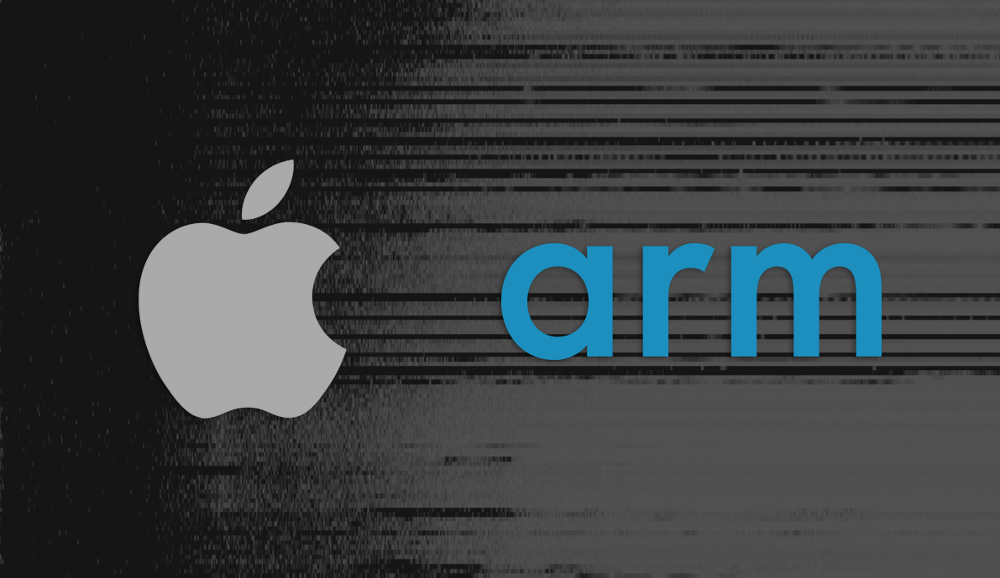

The Mac is dead. Long live the Mac.

So this is it. The end of an era. Intel has seemingly confirmed that they will lose Apple as a customer in the next couple of years, possibly from 2020 onwards. This is a very exciting time for the Mac. Just like the switch from PowerPC to Intel, this is a major change which will herald a massive change in the world of personal computers, and could possibly redefine the very definition of a personal computer.
Let's unpack this. But first, a bit of history.
In 2005, Apple announced that they would be switching over from using IBM built PowerPC processors to Intel's x86 processors. Although PowerPC processors were very fast, they were quite power hungry and ran quite hot–undesirable qualities for use in a laptop. There were also issues with IBM being able to manufacture the chips on time. Steve Jobs decided enough was enough and announced the decision to switch over to Intel chips. This was easier said than done, as this wasn't a case of simply switching out the processors and hitting the restart button.
To run Mac OS X on the Intel chips would require a complete rewrite of the operating system, as it would compile differently than on PowerPC chips. And as if changing the operating system wasn't itself a mountain to climb, every single application or piece of software written for the Mac would also need to re-created to be able to run on the new Intel processors. However, with some clever software writing to help developers, Apple managed to completely switch over to Intel chips within 2 years. A piece of software called Rosetta, allowed developers to run their PowerPC compatible software on Intel chips. Although this wasn't an ideal solution and some applications such as the Adobe Suite used by a large majority of Apple customers, needed to be completely rewritten in order to function on the new processors.
As tumultuous and inconvenient those 2 years may have been, it was definitely worth it. Apple was back on top, making some of the most powerful machines their customers could buy. Intel kept on making bigger advances year on year, and the customers lined up to get their hands on a Mac. All was well. Apple used AMD or Nvidia graphics cards in their higher end specifications, and it's pro users were very happy. Fast forward to 2012, and the first noises of discontent could be heard. The Mac Pro wasn't as fast as it should have been, and Intel's turn of speed in both processor speed and manufacturing capability started to slow down. The next generation Retina display MacBook Pro lineup was announced in late 2012, and thereafter things started to go wrong. Apple was unable to update the 2012 model's adequately, and it took them until 2016 to launch the next generation model. Now ordinarily 4 years isn't that long a time, but with Intel's ever smaller rate of improvement, combined with Apple's obsession with creating thin and light computers was starting to affect the upgrade schedules of their pro users.
Around this point of time, applications were starting to rely on parallel compute hardware, which dramatically accelerated their speed and efficiency in various tasks. Graphics processing units or GPU's were now becoming more and more popular as productivity software for creatives started to rely on them more heavily than ever. This is an important factor, as you shall see later on.
Imagine this scenario. It's early 2016. You're a pro user, with the latest 15-inch MacBook Pro. You've got an Intel quad-core processor, which is a generation older than the competition, and an ageing Nvidia GPU, which barely gets the job done with the demands of newer pro software. It's been a few years, and you've held off buying a new laptop as you know Apple is launching the next generation MacBook Pro soon. The leaks promise a super thin and light laptop which is expected to pack the latest and greatest internal hardware. You're not happy as your work is getting affected, but no matter. The new Mac will be here soon, and all will be well. It's now October 27th, and Apple has finally revealed the new MacBook Pro, and now you're very angry indeed. The new laptops look fantastic, and come in Space Grey! But they are woefully inadequate at launch, barely faster than your current machine, and have absolutely no ports at all! Crucially they also don't have a pro-level GPU. What now?
Apple had been concentrating on their mobile devices, namely the iPhone, and had clearly taken their eye off the ball, quite literally. There were reports of hardware and software teams being told to prioritise development for the iOS and iPhone. So say the rumours, but long story short, you were essentially getting screwed over by Apple. Betrayed even, one might say. To add to the misery, the laptops suffered battery issues, display issues, speaker blowouts, malfunctioning ports, and had chronically flawed keyboards which could turn a MacBook into a very expensive paperweight. Apple appeared to have not only shot themselves in the foot but had started painfully hacking away at every part of their legs with a machete. It was brutal to see this unfold.
In 2018, Apple updated the MacBook Pro's with significant upgrades, but still suffered from the chronic keyboard issues and now, significant thermal throttling. The GPU's were still a sore point, and in 2018, did not officially support Virtual Reality, which is borderline criminal. Was this tragic or funny? Both perhaps.
The current situation for a MacOS pro customer is not great at the moment. Short of spending a preposterous amount of money, the current lineup is average at best, and hopelessly underpowered in comparison to it's Windows rivals at it's worst. But, history often repeats itself, and I believe we are currently at the end of an era, and at the cusp of a new one. This change of guard is perhaps the most significant in the history of the Mac and looks set to propel the Mac back to where it belongs, right at the top.
I'll have to rewind again and show you frame by frame in slow motion, how this change will come to pass. It all starts with the inception of the iPhone, back in 2007. Apple wanted to make a small and powerful phone, and at the time was looking at Intel to design and manufacture the processor. But Intel didn't see the value of investing in the design and production of a low power chip, and wanted to focus on creating products for laptops and desktops. Apple then worked with ARM, a small British company for the design of the main CPU, which was manufactured by Samsung. Intel did not see the smartphones or mobile devices as the future, and ultimately it missed the boat. Long story short, ARM has a large lead on the design of mobile chips, and it's licensing model allows customers to choose their own manufacturers which is a critical factor as it allowed Apple to negotiate a better deal and save money on manufacturing costs, instead of being held ransom by single supplied, for example, Intel. In 2019, chances are that the device you're reading this on, or a device you own, is probably powered by an ARM-designed chip. Both Qualcomm and Apple use ARM's architecture in the design of their mobile chips.
These chips with ARM cores are excellent for use in mobile devices with their low power draw, and minimal thermal output. It's not only mobile devices which use them but now servers are also starting to use them for low power instances in a bid to cut electricity costs. ARM and Intel employ different instructions sets in their processors. ARM uses Reduced Instruction Set Computing (RISC) and Intel's x86 processors use Complex Instruction Set Computing (CISC). Although this largely doesn't matter as the electronic devices you might use, usually contain a mix of both sets of instructions. Both of them have their advantages and disadvantages for certain tasks, hence they will be found being used together.
Intel designs and manufactures their own chips, which gives them greater control over their design and production, hence their ability to not only innovate across the board and create better products but also the privilege to charge more and hence, lead to increased profits. ARM, however, has a different business model. Advanced RISC Machine, ARM for short, designs the chip architecture, which they then license to other companies (such as Qualcomm), who will manufacture them and sell them to other companies (such as Samsung, Apple), who will use them in their device. This is usually the CPU, GPU or both. Other integral parts of a computer, such as the memory, connectors, radios, amongst others are designed and manufactured by other companies. Although Intel designs and manufactures CPU's and GPU's, the final product in the consumer's hands are an amalgamation of parts from various manufacturers.
Mobile devices use a highly compressed form of this amalgamation called System on Chips. Abbreviated to SoC, this particular thumb-sized bit of silicon contains all the major parts of a computer, such as the CPU, GPU, memory, antennas, and so on. So Apple or Qualcomm will buy parts from various suppliers, or create their own, to eventually make an SoC. They will then sell these SoCs to other manufacturers, such as Samsung, or LG, or Google for them to use in their devices.
As the rapid decline of the Mac unfolded, Apple was making huge strides with their mobile devices. As of 2019, the iPhone and iPad are some of the most powerful mobile devices you can buy, with great battery life to boot. Their A-series chipsets which power their devices are class-leading, and competitors are struggling to keep with the year-on-year improvements achieved by Apple. This is not purely down to the physical hardware itself, as the software running on those chips have been exceptionally well optimised to ensure efficient use of resources. Since 2011, their chips have gotten up to 36 times faster in multi-core tasks and 17 times faster in single core tasks. In comparison to its competitors, Apple has been focussing on ensuring that the hardware they design is used efficiently by the software they write. Navigating through marketing and PR fluff is quite a difficult task for the average consumer, as certain metrics advertised by manufacturers have next to no impact on the quality of their experience of the device they are trying to sell. Case in point, Qualcomm advertised the higher number of cores their SoC's had in comparison to Apple, but this didn't matter as there wasn't much software written for Android devices (which used Qualcomm's products) to take advantage of those extra cores. Extra cores are usually attributed to better multi-tasking performance and better battery life and more.
Now diverging back to the Mac, we can now see a situation where Apple has the ability to create very powerful chips with ARM architecture, with exceptionally powerful GPU's, the likes of which can traditional gaming consoles. The caveat here is that the software has to be well optimised to ensure that these statements hold true. The potential for Apple to use ARM-based chips for the Mac is ripe, and we will probably see the first implementation in the model which will succeed the 12" MacBook. Subsequently, the entire product lineup will eventually switch over to the new ARM-based chips, with the 'Pro' lineup' last to make the change. Intel will keep pushing the boundaries of what is possible, and there is still time left to convince Apple to retain their chips for the more powerful 'Pro' hardware.
It is a little tricky to directly compare Apple's ARM-based A-series chips versus Intel's latest and greatest. Geekbench and SPEC2006 (synthetic benchmarking frameworks) results, amongst others, can be referenced, but the truth is altogether more complex. There isn't yet a benchmark which can conclusively prove if the A-series chips are faster or not. It's important to consider the fact that software optimisation is critical, hence inadequately optimised software can dilute the results.
But taking the results as an aggregate, and applying some healthy speculation, we can probably make an assumption that the A12X Bionic, Apple's most powerful chip is about 30-40% slower than Intel's desktop-class i7 processors[i7 8700K]. Taking into account the A12X Bionic's lack of active cooling (which is to say, it doesn't have fans or any cooling mechanism), and dramatically lower power consumption, the gap doesn't seem so large after all. It's fair to say that the A12X may not be able to sustain the same performance over extended periods of time, but with adequate cooling, this limitation can also be overcome. The A13X could help paint a better picture of what is to come next, and whether Apple can sustain the rapid year-on-year performance leaps which could enable them to confidently use ARM-based chips in the MacBook. Another potential upshot could be a dramatic increase in GPU performance. We could see performance equivalent to the GTX 1070 or more without the need for a discrete GPU. Perhaps we could see a combination at work here, with the integrated GPU working an AMD supplied discrete GPU. It is possible that Apple can solely rely on their own GPUs by 2025, depending on the performance increases they can make.
So how will the switch affect you? Well, the first thing you'd be worried about is the transition pains. Will your applications continue working? Apple’s XNU Kernel for macOS is compatible with x86 and ARM64, so it should be painless. There's also Marzipan for translating apps from iOS to MacOS, so it's likely that Apple will have a similar solution for native binaries to be converted to ARM - like back in the day when they had Rosetta. We might see one or two generations of MacOS which will still support older x86 apps, working through a translation layer or emulation, but eventually, Apple will kill support off, and become ARM only. Usually, it takes them two OS releases for this to happen, so 2020-22 with support for both x86 and ARM, and after 2022 probably ARM only.
We will not only potentially see a healthy increase in battery life, but also a solid improvement in connectivity options. Potentially powerful WiFi antennas, even eSim capability perhaps. More realistically, additional hardware in the real of Machine Learning, and security. A good example is the T2 chips that ship with the latest MacBook Pros. The T2 chip not only handles encryption and security but also video encoding, specifically the new H.265 standard.
There will still be some pain in making the switch, especially if Intel or AMD can find some huge gains in the next couple of years. Apple has always been exceptional in extracting performance from sub-par hardware, so at this point, it is difficult to imagine how the transition could play out.
I honestly can't really figure out how this will play out, and what to look out for. But there is no smoke without some fire, so it's fair to say there is something big coming up on the horizon, and it should be an exciting, and perhaps actually revolutionary.
Huge thanks to Coreteks for contributing to this piece, do subscribe to him on Youtube, and watch his latest video on future of Intel and AMD.
Reference:
https://mashable.com/2016/06/29/intel-macs-at-10/#dqeByJREpkqp
https://appleinsider.com/articles/18/12/06/qualcomms-snapdragon-855-is-over-a-year-behind-apples-a12-bionic-lacks-a-premium-android-audience
https://reveried.com/article/arm-processors-nearing-performance-parity-with-x86
http://www.slashleaks.com/l/apple-designed-arm-mac-processor-benchmarks
https://www.youtube.com/watch?v=IfHG7bj-CEI&frags=pl%2Cwn